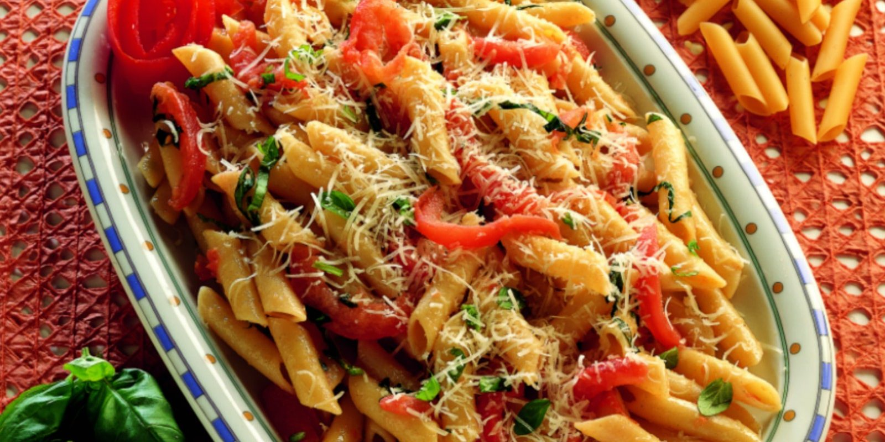

Penne al pomodoro
Ingredienti
Di seguito riportiamo gli ingredienti per preparare il nostro piatto
- 300g di penne
- 400g pomodori freschi
- maggiorana
- olio d'oliva
- basilico
- erba cipollina
- sale
Preparazione
- Cuocere le penne in acqua bollente
- Tuffare i pomodorini in acqua bollente, sbucciateli, tagliateli a dadini.
- Mettete a scaldare in una padella 2 cucchiaiate d’olio e fatevi saltare brevemente il pomodoro; salatelo.
- Unitevi una cucchiaiata di erbe (cipollina e maggiorana) tritate e il basilico spezzettato.
- Scolate la pasta e conditela con questo sugo.
- Spolverate con il pecorino grattugiato a filetti e servite subito, ben caldo.